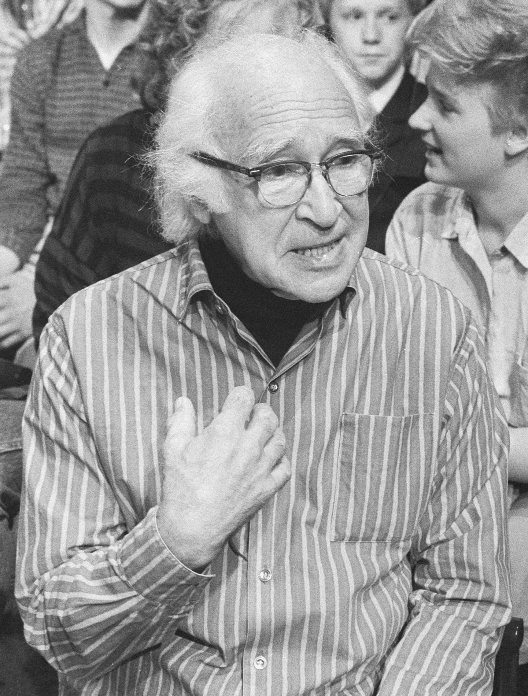
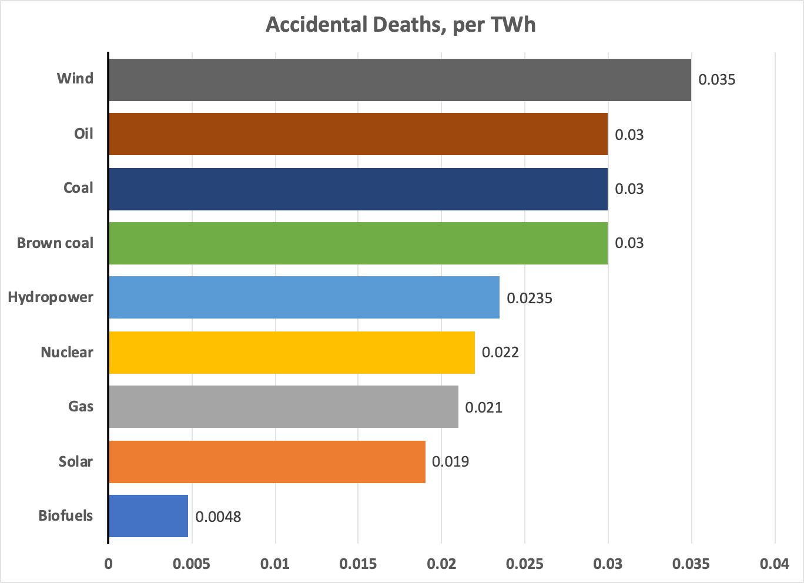
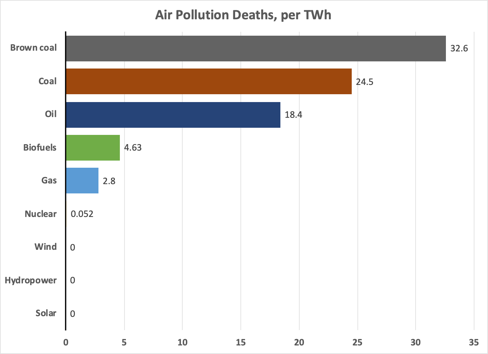

I’m Jonathan Burbaum, and this is Healing Earth with Technology: a weekly, Science-based, subscriber-supported serial. In previous installments of this serial, I have offered a peek behind science headlines, focusing on climate change/global warming/decarbonization. I have welcomed comments, contributions, and discussions, particularly those that follow
Deming’s caveat
, “In God we trust. All others, bring data.” Recently, I’ve pivoted to a more direct approach.
COP26 is behind us, and, like its 25 predecessors, it’s produced a series of toothless political commitments that are loosely based on recommendations given by large teams of scientists. Sadly, while intellectually honest, such approaches are seriously limited in scope and thus doomed to failure in the long run. Given the continued naive commitments of our leaders, I must now propose a more aggressive pitch:
One planet. One solution. Now.
That’s intentionally provocative but not prescriptive. No treatment has all the answers. But we must prepare to act with clear-headed decisions—any partial solution should be required to bring the rest of the solution to the table and specify the tradeoffs. We won’t get too many chances to get it right.
You can read Healing for free, and you can reach me directly by replying to this email.
If someone forwarded you this email, they’re asking you to sign up. You can do that below.
If you
really
want to help spread the word, then pay for the otherwise free subscription. I use any money I collect to increase readership through Facebook and LinkedIn ads.
Today’s read: 10 minutes.

“I think we’ve reached a point of great decision, not just for our nation, not only for all humanity but for life upon the earth. I tell my students, with a feeling of pride that I hope they will share, that the carbon, nitrogen, and oxygen that make up ninety-nine percent of our living substance were cooked in the deep interiors of earlier generations of dying stars. Gathered up from the ends of the universe over billions of years, eventually, they came to form, in part, the substance of our sun, its planets, and ourselves. Three billion years ago, life arose upon the earth. It is the only life in the solar system.
About two million years ago, man appeared. He has become the dominant species on the earth. All other living things, animal and plant, live by his sufferance. He is the custodian of life on earth and in the solar system. It’s a big responsibility.
The thought that we’re in competition with Russians or with Chinese is all a mistake and trivial. We are one species with a world to win. There’s life all over this universe, but the only life in the solar system is on earth, and in the whole universe, we are the only men.
Our business is with life, not death. Our challenge is to give what account we can of what becomes of life in the solar system, this corner of the universe that is our home, and, most of all, what becomes of men—all men, of all nations, colors, and creeds. This has become one world, a world for all men. It is only such a world that can now offer us life, and the chance to go on.”—Nobel Laureate George Wald.
While this may seem to be a contemporary quote from a prominent scientist warning about the dangers of climate change, it isn’t. This passage was immediately preceded by “We have to get rid of those atomic weapons, here and everywhere. We cannot live with them.” and it comes from a speech entitled
“A Generation in Search of a Future”
, presented March 4, 1969. The occasion was a one-day strike by MIT faculty and students (on the only date that doubles as a command, “March forth!”) to protest, among other things, nuclear proliferation and the Vietnam War. The hyperbole continued to escalate: In 1970, Wald went on to predict that “civilization will end within 15 or 30 years unless immediate action is taken against problems facing mankind.”
Precedent to the March 4 “protest” was an open letter signed by 50 MIT faculty, which stated:
Misuse of scientific and technical knowledge presents a major threat to the existence of mankind. Through its actions in Vietnam our government has shaken our confidence in its ability to make wise and humane decisions. There is also disquieting evidence of an intention to enlarge further our immense destructive capability.
The response of the scientific community to these developments has been hopelessly fragmented. There is a small group that helps to conceive these policies, and a handful of eminent men who have tried but largely failed to stem the tide from within the government. The concerned majority has been on the sidelines and ineffective. We feel that it is no longer possible to remain uninvolved.
We therefore call on scientists and engineers at MIT, and throughout the country, to unite for concerted action and leadership: Action against dangers already unleashed and leadership toward a more responsible exploitation of scientific knowledge.
The persistent
Union of Concerned Scientists
was formed from this movement, an oxymoronic response to a “hopelessly fragmented” scientific community. It has expanded its scope to include climate change despite the apparent success of American strategy in the Cold War (the current situation in Ukraine notwithstanding) and the relentless proliferation of nuclear weapons. Is it any wonder that some have come to believe that the line between science and politics is blurred??
An aside about George Wald: His Nobel Prize wasn’t in Physics or Peace. It was for Physiology or Medicine, awarded jointly in 1967, “for … discoveries concerning the primary physiological and chemical visual processes in the eye”. Remarkable advances in Science, for sure, but he was hardly an expert in world politics or nuclear physics.
I’ve been blessed with the privilege to interact with several Nobelists during my career. In my judgment, many share a single character flaw—the Prize is the pinnacle and the capstone of a career-long quest for excellence. But, to a person, they’re overachievers, and in the end, the achievement (like the greyhound catching the rabbit) leads to malaise and misperformance. This unsettling feeling spurs a desire for an even more significant impact. It’s like winning the Super Bowl, an enormous achievement to be proud of. But the day after Super Sunday, every winning team (and the fans that support them) begin to turn their attention to a second victory the following season. In this case, Wald was speaking in the shadow of dual Nobelist Linus Pauling (Chemistry, 1954; Peace, 1962), another chemist with anti-nuclear political sentiments and the only person to have been awarded two solo Prizes in unrelated fields. [Pauling’s later career was marked by his persistent advocacy for Vitamin C as a cure for both cancer and the common cold, neither of which panned out. He probably sought three-peat with a Nobel in Medicine, too!] So, I think it’s fair to question Wald’s rhetorical motivations.
The point of this aside is while Nobel Prize Winners represent the best and brightest that humanity has produced, they’re still humans and subject to human flaws. They have excavated a seminal, transformational piece of knowledge in the sciences, but that doesn’t make them omniscient. I honestly wonder how Wald would have felt (without intending any disrespect) if his prediction (Global Thermonuclear War before 2000) had come to pass. Would he have felt sad for humanity or vindicated because he was right? Probably both because he was human. But, in polite society, he would only be allowed to admit to one of the two feelings!
I’ve been fixated (again) on the word “natural” for the past week. This obsession comes from my firm belief that we must work in concert with Nature if we hope to reverse climate change. Regarding “Nature”, there are two salient definitions, the Laws of Nature and the more insidious Human Nature. I’ve illustrated both of these in previous installments. Both are part of Science, which allows us to chart a path forward.
There's a bit of semantic subtlety when it comes to “Science”: If you’ve been paying attention, I regularly capitalize Science as if I were referring to the monotheistic omnipotent being, God. I chose this distinction to suggest neither equivalence nor opposition but emphasize that Science is a fundamental constant that exists even without Man. The subtle difference between Science and what is practiced by scientists like me is not unlike the relationship between The Almighty and the clergy. Like the clergy channeling God, scientists try to divine Science by carefully and systematically observing the world. But, scientists are themselves human and prone to all of the flaws of Human Nature, including egotism (in particular!) and faulty logic.
Previously, I wrote, “By continuing to pin our hopes on technology or politics, we’re ignoring an existential threat to our economic standard of living.” In writing this serial, it has become apparent that we need to rely on
both
technology
and
politics for solutions! In practice, politicians pass the buck to technologists and vice versa. And some technologists are more than happy to oblige: As in the opening section on George Wald, prominent scientists often adopt the mantle of the ancient
Greek Oracles
. Instead of detailing and accurately weighing the consequences of the different choices available to political leadership, they prescribe solutions and warn of dire consequences should their “advice” be ignored.
Some regular readers will point out, accurately, that this serial has followed the same path—For months, I’ve released installments on the consequences of global warming and on what I believe to be a possible path to modify the outcome. But, I think I’m different in one significant respect: Instead of prescribing a solution, I lay out the tradeoffs of choosing one path over another, of continuing on our current path versus changing our approach, based on what is known for sure about Science.
It all boils down to this: We must collectively pick our poison. Either we continue on our current path and gradually change the composition of Earth’s atmosphere until the climates change permanently, or we (quite literally) follow Isaiah 2:4 and “beat [our] swords into plowshares, and spears into pruning hooks” by focusing our most powerful carbon-free energy source (nuclear energy) on reversing the changes that our previous energy choices have created. To the extent that other sources can be utilized, great—but nothing should be ruled out based on perception alone.
To wit, when confronted with the nuclear desalination proposal, several colleagues of mine have suggested that “nuclear”
anything
is a non-starter because of public opinion and government regulation. But that’s Politics, pure and simple, where Human Nature dominates. Unlike the Laws of Nature, politics has the intrinsic capability to adapt to societal needs. So, instead of listening to the scientists of political interest groups like the Union of Concerned Scientists, politicians should really heed Science itself, looking at primary data to base their conclusions on.
There are many kinds of data that can be examined, of course, but I’m still trying to limit each installment to just one. What’s a good metric? Let’s look at mortality—it’s a matter of counting how many lives have been lost based on the sources of energy, including nuclear. What I found is this chart:
If you look carefully, you see a conflation of different data sources, and a combination of lethality modes, “accidents” and “air pollution”. Those are pretty different, right? One is direct, and one is inferred. So let’s break that out, shall we?

Breakdown of above, primarily from Sovacool et al. “Balancing safety with sustainability: assessing the risk of accidents for modern low-carbon energy systems”, Journal of Cleaner Production, Volume 112, Part 5, 2016, pp 3952-3965.

Breakdown of above, primarily from Markandya & Wilkinson, “Electricity generation and health”,The Lancet, Volume 370, Issue 9591, 2007, pp 979-990,
Clearly, the inferred deaths from air pollution dominate mortality! You can read the underlying papers yourself to figure out if that extrapolation is justified—from my scan, it’s mostly looking at increased incidence of cancers and lung disease from pollution, and that obviously depends on emissions controls based on fuel source, proximity and frequency of exposure, etc. etc., so it’s a much (much!) squishier number! I’m pretty sure that physicians can accurately establish an industrial accident as a cause of death, but how do they attribute deaths to air pollution? It’s really hard: Was the patient also a smoker? Alternatively, if they were aware of environmental pollution, did they use PPE? The bottom line, it’s a very soft conclusion with relatively straightforward means of mitigation. The comparison is, inhererently, apples and oranges.
Regardless of how you slice it, this data clearly says that nuclear is at least as safe (from a mortality perspective) as other carbon-free energy sources. If you’re pledged to “follow the Science” and if you value human life, then it’s the obvious choice—it’s disingenuous to pick additional data (like indirect deaths from pollution) to justify the option you prefer. Yet, perfectly rational people with advanced degrees in Chemistry and Biochemistry (like myself, Linus Pauling, and George Wald) get anxious when nuclear is on the table. It’s NOT rational. The bottom line: Nuclear energy is demonstrably the safest form of carbon-free energy, yet public opinion (which drives regulation) has been turned against it, by groups like the Union of Concerned Scientists!!
The existential threat is this: While professing to “follow the Science”, we’re actually delegating the decision to scientists, and failing to account for both their strengths
and
their limitations. Hard choices are necessary. It makes no difference whether, on the one hand, a Nobel Laureate prescribes a solution that cannot be adopted politically, or, on the other, if a President prescribes a solution that flies in the face of Science. Neither outcome will be successful, and we’re stuck with the status quo. The difference is, public opinion is malleable while Science is not.
I’m hoping that my meager effort here can help guide rationality into the conversation—please help to spread the word. Try to avoid picking the choices that “feel right” without determining, first, what data will best determine the outcome of the choice.